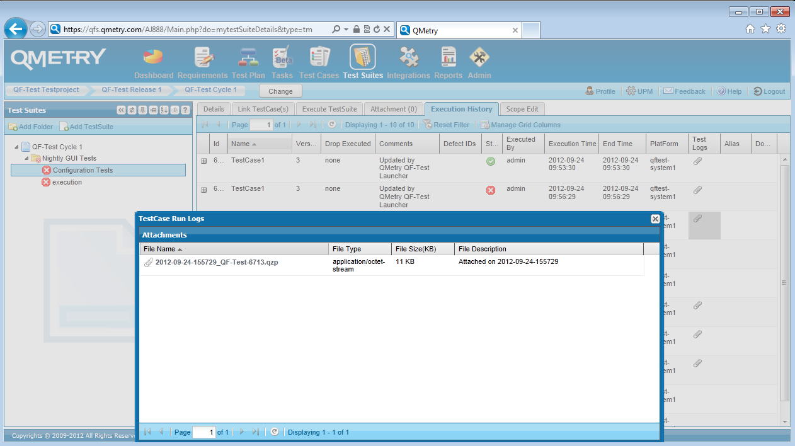

| Version 6.0.3 |
The current integration between QF-Test and QMetry relies on planning the tests and its steps within QMetry and forwarding the actual test-execution to QF-Test. Once the the test-run terminates the QF-Test run-log and its HTML report will be automatically uploaded to QMetry to the respective result area as well as the state of the test-case in QMetry will be set to the according result.
You need to prepare your test-system in order to run QF-Test tests. Please perform the following steps:
QMetryAgent.properties correctly to use
the required environment variables of QMetry's QF-Test wrapper.QMetryConfig.properties correctly to show
to the right QF-Test executable.QMetryConfig.properties, see next section for details.After setting up the agent and launcher, you need to plan the test-execution. QMetry supports several ways of integrating QF-Test test-cases. You can find all supported integrations in QMetry's integration guide document. Please perform following steps for a simple integration:
Now you are ready to run the test-cases:
The following figure shows the 'Execution History' tab in 'Test Suites' holding the run-log:
|
|  | ||
|
| Figure 25.14: QF-Test run-log in QMetry | ||
You will find a more detailed description of how to setup QMetry in the manual of QMetry and in QMetry's integration guide document.
It's recommended to set following values in the configuration file QMetryConfig.properties:
generic.adapter.success.code to
0,1.qftest.additional.arguments to
-test ${QMTestCaseName} in case of local test execution.
qftest.additional.arguments to
-test ${QMTestCaseName} -calldaemon -daemonhost
<testsystem> -daemonport <daemonport>
.As already mentioned in the previous section, you need to use the same name for the test-case within QMetry and for the value of the 'QF-Test ID' attribute within QF-Test.
Further ways for integrating QMetry and QF-Test can be found in the integration guide document provided by QMetry.
| Last update: 9/6/2022 Copyright © 1999-2022 Quality First Software GmbH |